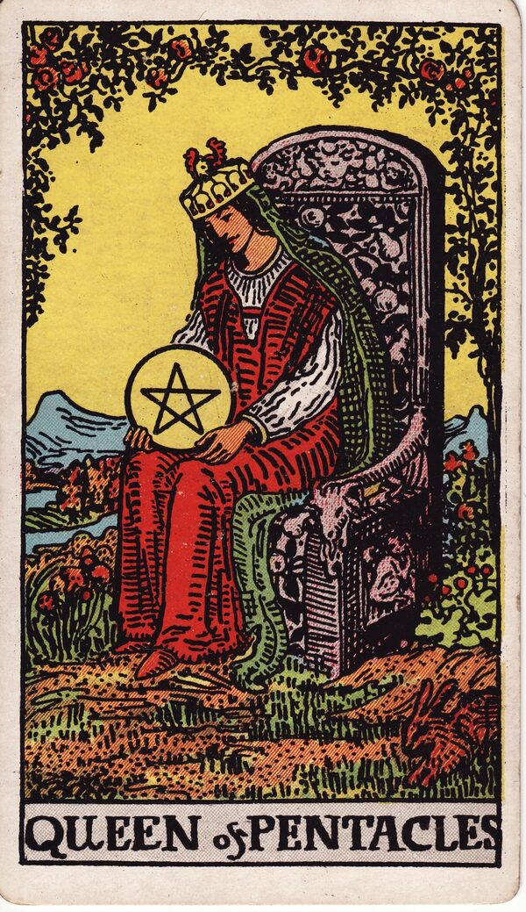

Minor Arcana · Suit of Pentacles
Queen of Pentacles Tarot Card Meaning
The Queen of Pentacles is warm, capable abundance — nurturing, practical, grounded, generous. Want to know what it means in your spread? Every reader on our line is hand-vetted — connect in under 60 seconds, $1 for your first minute, hang up anytime.
- Hand-vetted readers
- Available 24/7
- Hang up anytime

Queen of Pentacles — What It Shows
The Queen sits on a throne in a lush garden, cradling a pentacle like something living, a rabbit (fertility, abundance) leaping nearby. She's surrounded by growth and warmth. She has mastered the earth suit inwardly: she provides, nurtures, and keeps everything running with practical, generous competence. The Queen of Pentacles is groundedness with a warm heart.
Queen of Pentacles Upright Meaning
Upright, the Queen of Pentacles is nurturing, practical abundance. Warm and capable, she balances home, work, and resources, provides generously, and stays grounded. As a quality to embody: take care of the practical and the people, create security, and be both warm and competent. Its core note is abundance shared with care.
Queen of Pentacles Reversed Meaning
Reversed, the balance tips. Self-neglect from over-giving, smothering, financial dependence or insecurity, work-home imbalance, or using material things to express what should be emotional. The nurturing has stopped including herself.
Queen of Pentacles in Love & Relationships
In love, the Queen of Pentacles is warm, practical, devoted care — love shown by providing, supporting, and creating a secure, comfortable life together. Example: a caller unsure if a partner's practical support "counted" as love drew this card; the read reframed it — for this energy, providing and showing up is the love language, every bit as real as words.
Queen of Pentacles in Career & Money
For work it's competence, resourcefulness, financial savvy, and the ability to nurture a business or team while keeping life balanced. Example: someone juggling career and home pulled this card; the message affirmed they can hold both with grounded competence — provided they don't neglect themselves doing it.
Queen of Pentacles as Advice
As advice: be practical and nurturing — and include yourself in the care. Tend the resources and the people, stay grounded, and don't give until you're empty.
Queen of Pentacles Reversed in Love & Career
Reversed, this card deserves a closer look by area. In love, it's over-giving to the point of self-neglect, smothering, financial dependence creating imbalance, or material gestures standing in for emotional connection. In career, reversed it's work-life imbalance tipped over, money stress, or competence undermined by burnout. The reversed Queen's question is whether the care still includes her. A live reader can help you tell generous from depleted.
What People Ask About the Queen of Pentacles
The questions readers hear most about this card:
"Queen of Pentacles as feelings?"
Warm, caring, practical — love shown through support and security.
"Is it a specific person?"
Often a grounded, nurturing provider — or that energy in you.
"Reversed — am I overgiving?"
Frequently — self-neglect or smothering; context refines it.
"Does it mean financial stability?"
Often — resourcefulness and a secure, well-managed life.
Queen of Pentacles — Yes or No?
Upright: a warm yes, especially for security, home, and practical matters. Reversed leans no, or "yes once you tend to yourself too."
Queen of Pentacles Timing in a Reading
Timing is the least precise thing tarot does, so treat this as a lean, not a date. Court cards describe a person or energy more than a clock; when the Queen of Pentacles does flag timing, readers frame it as a steady, grounded period rather than a set date. Reversed, imbalance or stress distorts it. A live reader reads timing from the full spread and your question far more reliably than the card alone.
Queen of Pentacles Card Combinations
Context changes everything — a few pairings readers see often:
Queen of Pentacles + King of Pentacles
A stable, prosperous, mutually supportive partnership.
Queen of Pentacles + Ten of Pentacles
Nurturing care building lasting family wealth and security.
Queen of Pentacles + Ten of Wands
Over-giving and carrying too much — self-neglect risk.
Queen of Pentacles in a Tarot Reading
A meanings page is the map; a live reading is the territory. The Queen of Pentacles shifts with its position and the cards around it — which is what a hand-vetted reader interprets for your question. See the full Suit of Pentacles, all 56 cards on the Minor Arcana hub, or start a phone tarot reading.
What Does the Queen of Pentacles Mean for You?
A meanings list is the map; a live reading is the territory. We'll connect you with the right hand-vetted tarot reader in under 60 seconds. $1/min first call · 15 minutes for $10 · hang up anytime · 100% satisfaction promise.
Call (888) 920-6662 NowQueen of Pentacles — Frequently Asked Questions
What does the Queen of Pentacles mean?
Nurturing, practical, grounded abundance — a warm, capable provider.
What does it mean reversed?
Self-neglect, smothering, financial dependence, or work-home imbalance.
What does it mean as feelings?
Warm, caring, practical — love shown through support and security.
What does it mean as a person?
A warm, capable, grounded, nurturing, generous individual.
How much does a reading cost?
First-time callers pay $1/min, or 15 minutes for $10, and you can hang up anytime.
Get Your Tarot Reading Now
Connected to a hand-vetted reader in under 60 seconds, the cards pulled on your real question, and you hang up with clarity.
Call (888) 920-6662